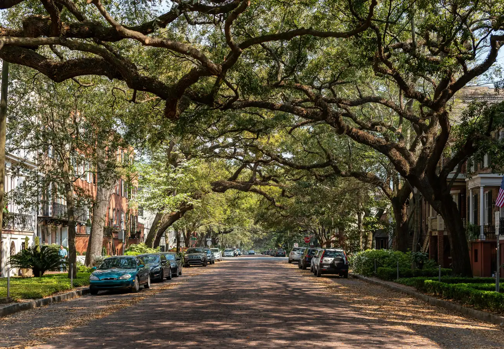

12 North Georgia countiesNorthwest Atlanta, established and connected.
Cobb anchors Northwest Atlanta with established neighborhoods, a top-rated school district, and The Battery Atlanta around Truist Park. Marietta Square, Kennesaw Mountain, and quick access to I-75 and I-285 put downtown about half an hour away.